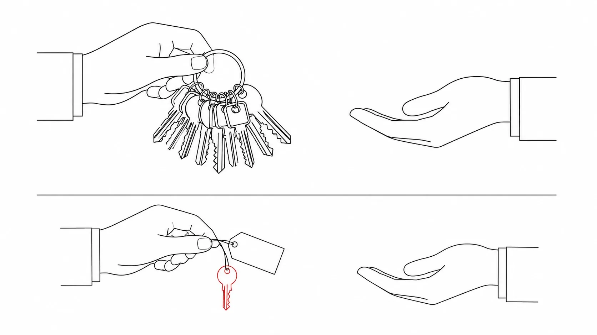

Why OAuth Exists
Every integration you have ever wired up starts with the same awkward moment: an application you did not write needs to do something inside an account you own. There is an obvious way to arrange that, it works on the first try, and it is wrong in four separate ways. Naming those four failures precisely is the entire reason this protocol exists.
The simplest thing that could possibly work
Draw two boxes. On the left, a scheduling app somebody built last year. On the right, your calendar provider's API. The app needs to read your events so it can find you a free hour. The cheapest wiring that satisfies that requirement is a text field: the app asks for your calendar username and password, stores them, and logs in as you. No redirects, no tokens, no extra endpoints. One box calls the other with your credentials in hand.
Now apply pressure. The first thing that breaks is blast radius. A password is not scoped to anything — it is the credential that opens the whole account, so the app can do exactly what you can do. Not "read your calendar": everything. Delete every event, rename the account, change the recovery address, and reach whatever else that same login unlocks. There is no dial to turn down. The permission you granted is the union of every permission you hold, and you granted it by typing eleven characters into a box you did not control.
The second failure is revocation, and it is the one that really hurts, because it is coupled to everything else you own. Suppose you want that one app to stop. There is exactly one lever: change the password. That lever is global. It logs out your phone, your laptop, your work machine, and every other integration you ever connected the same way — the four you remember and the two you don't. You wanted a local action and the system only offers you a global one, so in practice nobody pulls it, and the access just persists. Forever is not a figure of speech here; it is the default.
Third, the app is now a credential store whether it wanted to be one or not. A company whose core competence is scheduling has been drafted into the password-custody business, with all the key management and breach exposure that implies. It cannot even hash the value, because it has to replay the plaintext at every login. And your password almost certainly opens more than one service, so a breach of the scheduling vendor is a breach of accounts they have never heard of.
Fourth, and the one that only bites during an incident: there is no record of what the app did. Its requests arrive as you, indistinguishable from the ones you made yourself. No log line anywhere says "the scheduling app deleted this event". Six months later, when something is missing, the audit trail can tell you the account did it and nothing more. Attribution was destroyed at the moment you handed over a credential that means "I am the account holder" rather than one that means "I am an app acting for the account holder."
The app should never touch the vault. It should hold a key someone else minted — for one door, with a stated expiry, revocable on its own. The one-line version of OAuth
Every one of those four failures traces back to a single design decision: the app was given your credential. So invert it. Issue the application a different credential from the one you use, one that carries its own limits and can be destroyed by itself. That is precisely what RFC 6749 does. The client is issued a different set of credentials than those of the resource owner, and it uses an access token rather than the resource owner's credentials to reach protected resources. An access token, in the spec's own words, is a string denoting a specific scope, lifetime, and other access attributes — three properties a password conspicuously lacks.
| Axis | You hand over your password | You delegate a token |
|---|---|---|
| What the app holds | Your credential, replayable everywhere it works | A credential minted for that app alone |
| Blast radius | Everything you can do | The scope granted, and nothing outside it |
| Lifetime | Until you change the password | Stated on the token itself |
| Revocation | Global: breaks every other client too | Per-grant, via a revocation endpoint (RFC 7009) |
| Storage burden | The app is now a password vault | The app stores a token it can throw away |
| Attribution | Its calls look exactly like yours | Calls are traceable to a named client |
"Just rotate the password" is not a revocation story. It is a global action with a local intent: you meant to evict one app and you evicted every device and every integration you own. Any design where the only kill switch is the user's own credential has no kill switch at all, because the cost of pulling it guarantees nobody will.
Authorization, not authentication
Be sharp about this, because the entire industry is sloppy about it and the sloppiness shows up as vulnerabilities. Authentication answers who is this. Authorization answers may this actor perform this operation on this resource. OAuth 2.0 is an authorization framework, and specifically a delegated authorization framework: the machinery by which one party — you — grants a second party — an application — bounded access to a third party's resources. Nothing in it is designed to tell an application who you are.
Look at what an access token actually asserts. It says: some authorization server, at some point, decided this client may act within this scope for this lifetime. It does not say a human is present. It cannot, because most tokens are used long after the human walked away — a nightly sync job presents a token at 03:00 with nobody at a keyboard, and that is the normal case, not an abuse of it. If your login system's rule is "the token exchange succeeded, therefore the user is signed in", you have inferred an identity from an artifact that never claimed to carry one.
OAuth 2.0 answers "what may this application do, and for how long". It does not answer "who is this person". Proving identity requires OpenID Connect, an identity layer built on top of OAuth 2.0 — that is chapter 7, and it is a real addition, not a reinterpretation.
The dial that makes delegation useful is scope: the mechanism for limiting an application's access to a user's account, requested by the client and granted by the resource owner. That sentence contains the whole negotiation. The client states what it wants; the person who owns the resource decides what it gets. Neither side unilaterally sets the boundary, which is exactly the property the password approach threw away.

Swiss International Typographic Style illustration on a pure white field: on the left, a full keyring heavy with many keys being handed across; on the right, a single small key on a plain paper tag. Thin 1px black line-art, no shading, no gradients, no rounded corners; one Swiss red (#e63329) accent used only on the single small key. Strong asymmetric composition with generous whitespace and a thin horizontal rule dividing the two halves. No baked-in text or labels. Target size ~1280×720px, 16:9 landscape; compose as an on-page figure with the subjects centred and safe margins — it is letterboxed into a 16:9 box, so keep nothing important near the edges.
Generate this with your image agent, then drop the file here.
You have already lived through this
A calendar app asks to connect your Google Calendar. A CI service asks to connect your GitHub so it can read the repo and post build statuses. A dashboard shows a "connect your account" button. In every case the shape is identical, and once you have seen the shape you will not be able to unsee it: you click, the browser leaves the app and lands on a domain you recognise — the provider's own — you are shown a list of what the app is asking for, you approve, and you are dropped back where you started, now connected.
The critical detail is what did not happen. The password box, if one appeared at all, was rendered by the provider on the provider's domain, not by the app. The app never saw those keystrokes and has no way to replay them. Whatever it walks away with is something the provider minted deliberately, knowing which app asked and what you agreed to. GitHub's version of this is two ordinary URLs — one you send the browser to, one your server posts to afterwards.
GitHub's two endpoints
# send the user's browser here GET https://github.com/login/oauth/authorize # your server exchanges the code here POST https://github.com/login/oauth/access_token
The cast of four
OAuth 2.0 defines exactly four roles. Not five, not "it depends" — four, and every flow in this book is those four boxes with the arrows rearranged. Learn them as job descriptions rather than as machines, because in a real deployment two of them frequently run on the same hardware behind the same logo.
| Role | Definition | In the calendar example |
|---|---|---|
| Resource owner | An entity capable of granting access to a protected resource; when it is a person, it is called an end-user. | You |
| Client | An application making protected resource requests on behalf of the resource owner and with its authorization. | The scheduling app |
| Authorization server | The server issuing access tokens to the client after successfully authenticating the resource owner and obtaining authorization. | The provider's login and consent service |
| Resource server | The server hosting the protected resources, capable of accepting and responding to protected resource requests using access tokens. | The calendar API |
Two things in that picture routinely confuse people. The first is the word client. In OAuth it means the application requesting access — the thing that will hold the token and make the API calls. It does not mean the browser, and it does not mean the phone. Your server-side web app is a client. A backend daemon with no user interface at all is a client. The browser is a participant, but its job in most flows is to carry the user between domains, not to be the client.
The second is that the authorization server and the resource server almost always wear the same logo. One company runs both, sometimes on adjacent hostnames, sometimes in the same process. That convenience hides the fact that they are separate responsibilities sitting on separate trust boundaries. The authorization server authenticates the human, shows consent, and mints tokens; it is where policy lives. The resource server holds the data and validates tokens presented to it; it is where the blast radius lives. Draw them as two boxes even when your deployment diagram shows one, because the moment you have a second API — and you will — the split becomes real, and a design that conflated them will have no answer to "which API was this token minted for".
Confidential and public clients
One more distinction, and it is the one that decides which flow you are allowed to use later. Clients are split by whether they can keep a secret. A web application running on a web server is a confidential client: its client credentials and issued access tokens live on the server, where they are not exposed to or accessible by the resource owner. A user-agent-based application — code downloaded from a web server and executing inside the browser — is a public client, because its protocol data and credentials are easily accessible, and often plainly visible, to the resource owner.
This is not a statement about how careful the developer is. It is a statement about where the code runs and who can read it. Anything shipped to a user's device — a single-page app, a mobile app, a desktop binary — is public by construction, because any secret you compile into it is a secret you have published. If you have to choose and you have a backend, put the credentials on the backend: a confidential client gets to authenticate itself to the authorization server, which is a whole extra check an attacker holding a stolen code cannot pass. Only accept public-client status when there is genuinely no server to hold the secret.
RFC 6749: if the client type is confidential, or the client was issued client credentials or assigned other authentication requirements, the client MUST authenticate with the authorization server. The same document requires that the authorization server MUST use TLS for requests to both the authorization endpoint and the token endpoint — every arrow you draw in this book runs over TLS or it is not OAuth.
What to take away
Chapter 2 puts these four boxes in motion — the redirect out, the consent screen, the code that comes back, the exchange that turns it into a token. None of that will make sense unless the following are already load-bearing in your head.
- The problem is password sharing, and it fails on four axes at once: unbounded blast radius, no per-app revocation, credential custody dumped on the app, and destroyed attribution.
- The fix is a different credential. The client gets its own, and uses an access token — a string with a specific scope, lifetime, and other access attributes — instead of the resource owner's password.
- OAuth 2.0 grants delegated authorization. It does not prove identity; that needs OpenID Connect layered on top, which is chapter 7.
- Four roles, learned as jobs: resource owner grants, client requests, authorization server issues, resource server serves.
- "Client" means the application, not the browser. Confidential clients can keep a secret and must authenticate; public clients cannot, and everything shipped to a user's device is public.
- Authorization server and resource server usually share a logo and never share a responsibility. Keep them as two boxes on the whiteboard.